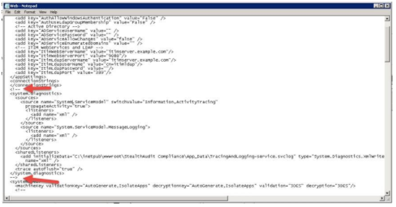
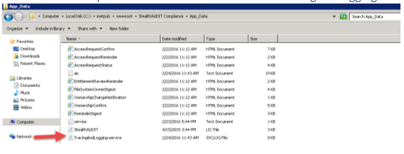

Summary: The information provided enables Diagnostic logging for the AIC. The additional logging is used to gather additional troubleshooting information.
Issue: How do I enable additional or diagnostic logging for the Access Information Center (AIC)
Instructions:
To enable diagnostic logs you need to uncomment the following lines in the Web.config file located under .\inetpub\wwwroot\StealthAudit Compliance:

Once the changes are made, Restart the StealthAUDIT Compliance Site.
The additional output will be located in the file called TracingAndLogging-service.svclog file under the .\inetpub\wwwroot\StealthAudit Compliance\App_Data folder

Module: AIC - Entitlement Review;AIC - Manage Resource Ownership;AIC - Remediate Open Shares;AIC - Reporter
Versions: NA
Dev Ticket: NA
Resolved In: NA
Legacy Article ID: 1127